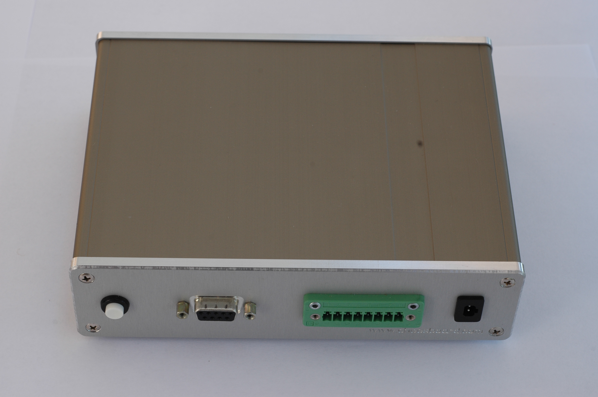

led-o-matic joins current powerfull technolgies with the idea of openes. The Software is free (free as a beer and as the speech). Almost Hardware is also open.
17.11.2010
web based remote client with simple color picker running in browser.
12.11.2010
arduino works with RGB LED stripe.
09.11.2010
Basic initial implementation on Google developer Days Bootcamp 2010 organized bei GTUG.
We can switch on/off the LED Nr13. on arduino with android phone over internet.
led-o-matic is arduino based device for controling of RGB LED stripe from android mobile phone over internet.
led-o-matic is open source and open hardware project using folowing technologies:
server is running on Google app engine.

The initial work with the the systme almost completely working was written by geeks team on google developer days boot camp in Munich, Germany in November.